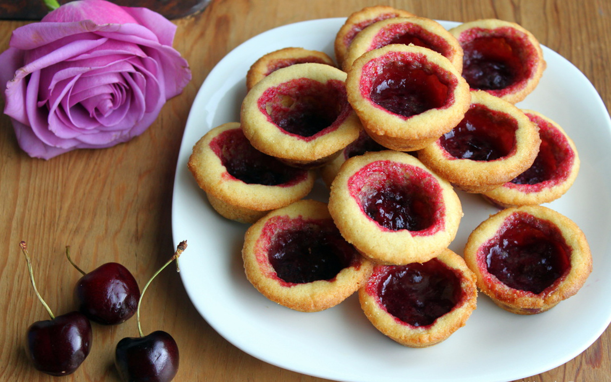

Cherry Tarts!

Cherry tarts are one of the many summer delights that are enjoyed by many fans around the world.
They can be served warm or chilled, and can also be served with a dollop of whipped cream and a sprinkling of chocolate shavings.
Ingredients:
1 (14.1 ounce) package refrigerated pie crusts
1 pound fresh sweet cherries, pitted
2 tablespoons minute tapioca
1/3 cup sugar
1/2 teaspoon almond extract
1 pinch salt
Directions:
- Place pie crusts on a lightly floured surface and roll out each crust with a rolling pin, so it is large enough to cut three 5 to 5-1/2-inch circles, for a total of 6 tart crusts.
- Fit each dough circle into a 4-inch removable-bottom tart pan. Press the dough against the sides of the pans, and prick the bottom with a fork to prevent bubbling. Remove any excess dough by running the rolling pin across the top of each pan.
- Refrigerate tart crusts until well chilled, about 45 minutes, keeping them refrigerated until ready to use.
- Preheat the oven to 400 degrees F (200 degrees C).
- In a large bowl, combine cherries, tapioca, sugar, almond extract, and salt. Remove the pans from the fridge and distribute cherry mixture evenly among the tart pans. Place the pans on a baking sheet.
- Bake in the preheated oven until cherries are soft and crust is golden brown, 25 to 30 minutes.
Go back to Home